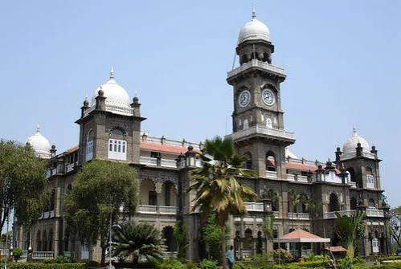
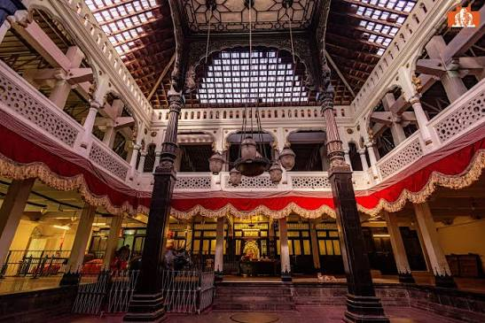
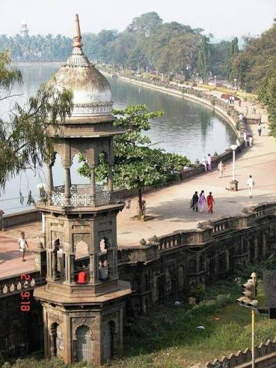
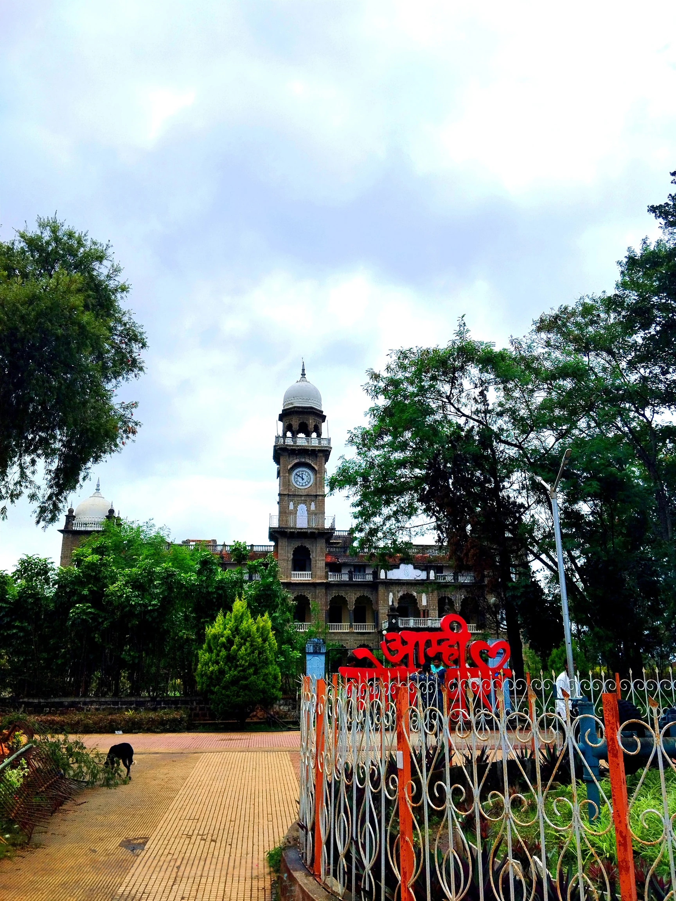

STYLE
Indo-European
The palace reflects a combination of European architectural influences and regional Indian design traditions.

HERITAGE / 06
A graceful royal landmark in Kolhapur, reflecting the architectural elegance and cultural history of the region.
SCROLL TO EXPLORE
01 / INTRODUCTION
Shalini Palace is a historic royal residence located beside Rankala Lake in Kolhapur, Maharashtra. Built during the reign of Chhatrapati Shahu Maharaj, the palace reflects the royal heritage and architectural character of Kolhapur.
With its distinctive stonework, spacious structure and lakeside setting, Shalini Palace remains an important part of the city's architectural and cultural identity.

02 / ARCHITECTURE
The palace combines European-inspired elements with local architectural details, creating a distinctive royal appearance.
STYLE
The palace reflects a combination of European architectural influences and regional Indian design traditions.
MATERIAL
Stone construction, decorative elements and carefully designed openings give the palace its distinctive visual character.
SETTING
Its location near Rankala Lake adds to the visual identity of the palace and connects the monument with Kolhapur's historic landscape.
03 / HISTORY
Shalini Palace represents an important part of Kolhapur's royal history and continues to stand as a reminder of the city's princely past.
20TH CENTURY
The palace was built as a royal residence during the period of Chhatrapati Shahu Maharaj of Kolhapur.
KOLHAPUR
Located beside Rankala Lake, the palace became part of the historic landscape associated with Kolhapur's royal heritage.
TODAY
The palace continues to attract visitors interested in the architecture and history of Kolhapur.
A ROYAL LANDMARK
Rising beside the waters of Rankala Lake, Shalini Palace became one of the notable architectural landmarks of Kolhapur. Its royal character and lakeside setting continue to connect the monument with the city's cultural memory.
05 / VISUAL RECORD
Photographs captured during our visit, documenting the palace, its architecture and its surrounding landscape.



CONTINUE EXPLORING
Back to Heritage →